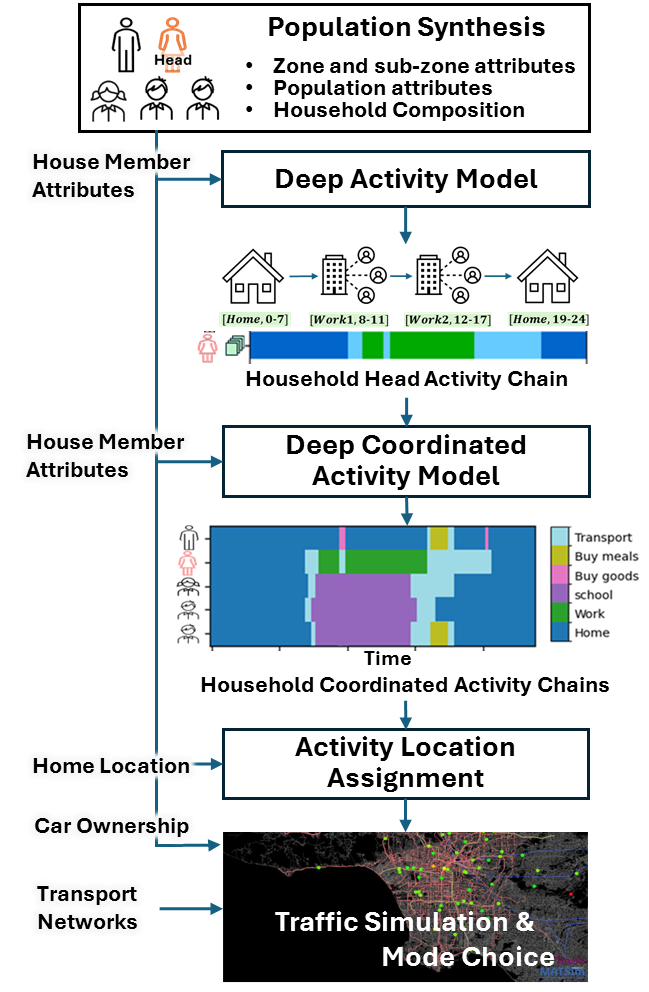
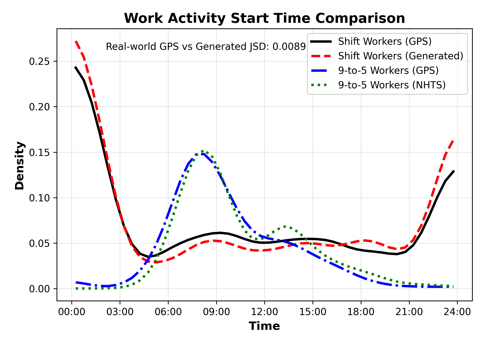

AI-Empowered Spatiotemporal Mobility Intelligence
2023 - Present | UCLA Mobility Lab
Project Overview
This direction develops a unified mobility intelligence framework for generating realistic daily activity-location behavior from heterogeneous data. The direction combines foundation-model learning, household coordination synthesis, and sparse-data augmentation into one coherent modeling agenda.
Motivation
Traditional travel-demand workflows are difficult to transfer across cities and often underrepresent populations with incomplete observations. Existing approaches also tend to separate spatial-temporal prediction from semantic intent and household coordination, which reduces behavioral realism.
Goal
Build transferable mobility models that can infer who travels, when they travel, where they go, and why they move, while maintaining robust performance in data-limited settings.
Method Storyline
Step 1: Learn a universal mobility representation
A foundation model is trained to fuse mobility traces, survey signals, semantic context, and regional structure. This creates transferable latent mobility priors that can be adapted to new geographies.

Step 2: Generate coordinated household behavior at city scale
The learned priors are integrated into a next-generation demand pipeline that models household-level coordination and links behavior synthesis with network simulation.

Step 3: Address underrepresented populations
A dedicated augmentation stream reconstructs activity chains for shift workers and other hard-to-survey populations, reducing bias in downstream planning analyses.

Results
- OD matrix reconstruction reaches cosine similarity around 0.97 versus benchmark demand outputs.
- Daily network VMT alignment reaches JSD around 0.006.
- Corridor speed and volume validation reports MAPE around 6.11% in large-scale evaluation.
- Shift-worker synthesis quality reports average JSD below 0.02.
Impact
This direction enables a practical path from limited data to policy-grade synthetic demand. It improves inclusion of underserved traveler groups, accelerates scenario setup, and increases confidence when linking AI-generated behavior to operational transportation simulation.
Representative Publications
- Learning Universal Human Mobility Patterns with a Foundation Model for Cross-Domain Data Fusion
- Next-Generation Travel Demand Modeling with a Generative Framework for Household Activity Coordination
- Human Mobility Modeling with Household Coordination Activities under Limited Information via Retrieval-Augmented LLMs
- Beyond 9-to-5: A Generative Model for Augmenting Mobility Data of Underrepresented Shift Workers